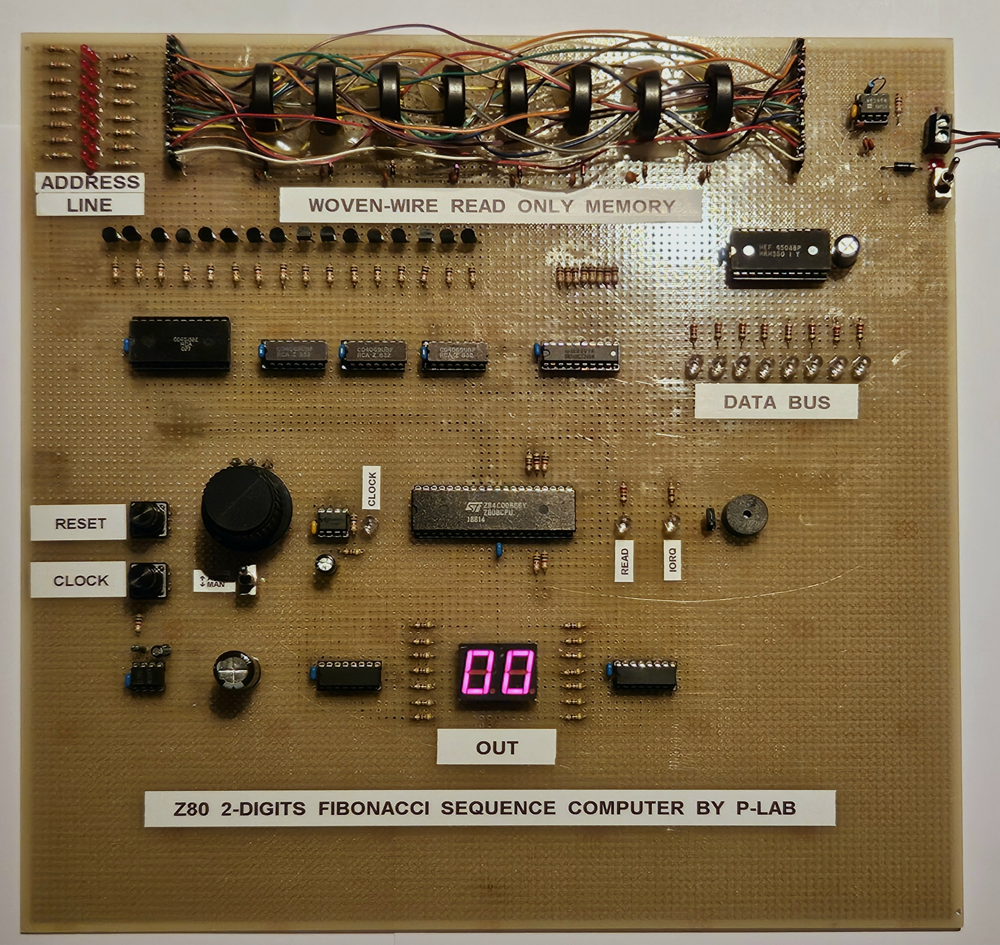

Z80 Demo Board with "Woven-Wire" Read-Only Memory
Documents hosted here:
PROJECT DESCRIPTIONProject Description [txt]
CREDITS
- Alessandro Breschi for the Z80 program
SCHEMATICS
Schematics [png]
External links and Inspirational contents:
Official Video [YouTube]Core Rope & Woven-Wire Memory Systems
Apollo Guidance Computer Restoration [YouTube]
Core Rope Memory Built and Explained - F-J's Physics - Video 169 [YouTube]
DRUM MACHINE USING NASA TECHNOLOGY - Rope Core Memory Sequencer [YouTube]
This work is licensed under CC BY 4.0